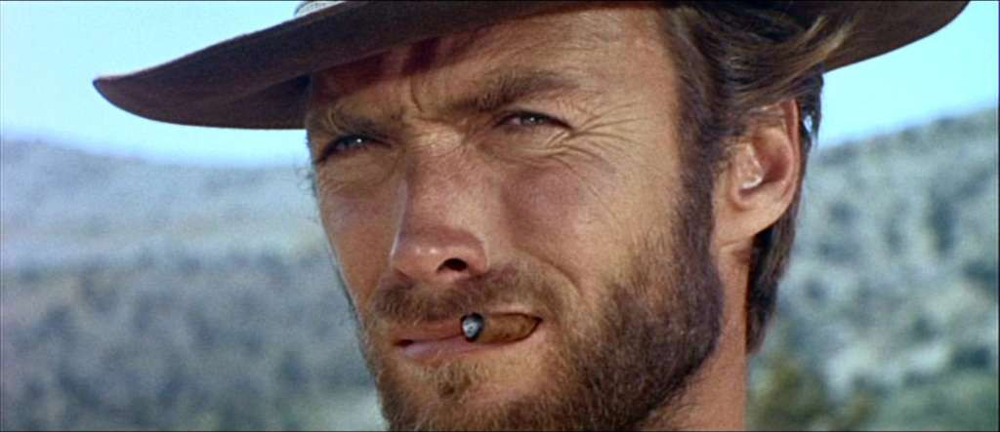
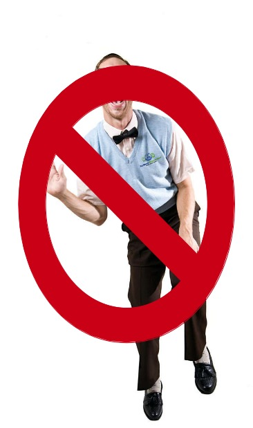

OSGeo-es y Geoinquietos
comunidades hispanohablantes geoespaciales
Jorge Sanz
- Trabajo en Prodevelop
- @xurxosanz
- Participo en:
- Escribo en:

OSGeo-es
Capítulo local de OSGeo para la comunidad hispanohablante

Los capítulos locales en OSGeo
- grupos de usuarios que comparten
- un área geográfica
- un mismo idioma
- dan un contexto más local a la fundación
- traducen documentos, software, sitios web
- promueven el FOSS4G y OSGeo
- de cualquier tamaño: para una ciudad o para un continente
¿Qué es OSGeo-es?
- empezamos en 2007,
tras las 1as Jornadas de SIG Libre de Girona - mismos objetivos que la Fundación
pero enfocados a la comunidad hispanohablante - capitulo oficial desde noviembre de 2008
Algunos números
- 527 participantes (lista de correo)
- Unos 7000 mensajes desde marzo de 2007
- 82 miembros
- 42 miembros con derecho a voto
- Hemos participado en casi 30 eventos
Consejo de dirección


Qué hacemos en OSGeo-es
- damos soporte en español
a cualquier duda sobre geomática libre - promocionamos la geomática libre donde nos dejan
- promovemos traducciones de software, artículos,...
Traducción de OSGeo Live
Proyecto de colaboración entre más de 100 desarrolladores, empaquetadores, traductores y testers de todo el mundo.
Charla más tarde o mañana???
Libro libre de SIG
- http://wiki.osgeo.org/wiki/Libro_SIG
- Proyecto liderado por Víctor Olaya (SEXTANTE)
- Licencia Creative Commons Atribución (CC-BY)
- Disponible para descarga o compra en papel
- Fuentes en LaTeX disponibles el SVN de OSGeo
- Revisión colaborativa
- Casi 900 páginas en dos tomos

Cómo contactar con nosotros
- Lista de correo:
http://lists.osgeo.org/mailman/listinfo/spanish - Canal de discusión de IRC:
#osgeoes en irc.freenode.net - Twitter: @osgeoes
- Wiki: es.osgeo.org
- Blog: osgeoes.wordpress.com
geoinquietos
¿qué es eso?
¿geeks?
¡geo-geeks!
El aprendizaje no es una actividad, es una actitud. Dejar la zona de comfort es lo que nos ayuda a crecer
Raf Roset (geoinquieto)
Definición
Grupos de gente a nivel local con ganas de compartir inquietudes y experiencias en SIG
¿Dónde nacen los geoinquietos?


y después llegaron...

{kind=link}